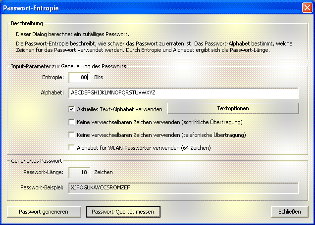

Sie erreichen diesen Dialog über den Menüeintrag Einzelverfahren \ Tools \ Passwort-Entropie.

Mit Hilfe dieses Dialogs können Sie Passwörter mit einer bestimmten Entropie erzeugen. Eine sinnvolle Anwendung dieses Dialogs ergibt sich aus folgender Überlegung:
Man geht heute davon aus, dass ein zufällig gewählter Schlüssel für moderne symmetrische Verfahren mit einer Entropie von mehr als 80 Bits als sicher gilt [1]. Will man ein entsprechend sicheres Passwort generieren, wählt man ein beliebiges Passwort-Alphabet und stellt eine Passwort-Entropie von 80 oder mehr Bits ein.
Für umfassende Informationen zu Passwörtern klicken Sie hier, Informationen zur Qualität von Passwörtern finden Sie hier.
Damit Sie ein zufälliges Passwort erzeugen können, müssen Sie im oberen Teil des Dialogs die gewünschte Passwort-Entropie sowie ein Passwort-Alphabet angeben.
Über den Button Passwort generieren können Sie ein zufälliges Passwort erzeugen.
Das Passwort-Alphabet lässt sich neben der manuellen Eingabe durch vier verschiedene Kontrollkästchen einstellen: Jedes Kästchen bringt ein bestimmtes Alphabet mit. Kreuzen Sie mehr als ein Kästchen an, wird die Vereinigungsmenge der Zeichen als Alphabet verwendet.
Ist das Kontrollkästchen Aktuelles Text-Alphabet verwenden markiert, wird das aktuell eingestellte CrypTool-Alphabet als Passwort-Alphabet verwendet (das CrypTool-Alphabet können Sie über die Schaltfläche Textoptionen verändern).
Die beiden Kontrollkästchen Keine verwechselbaren Zeichen verwenden [...] stellen jeweils ein statisches Alphabet bereit, wo die Verwechslungsgefahr zwischen dein einzelnen Zeichen bei der Übertragung möglichst gering ist: Im einen Fall wird ein Alphabet verwendet, das sich besonders für schriftliche Übertragungen eignet. Im anderen Fall wird ein Alphabet verwendet, das sich besonders für telefonische Übertragungen eignet. Die statischen Alphabete sollen in beiden Fällen das Risiko minimieren, dass Passwörter falsch interpretiert werden (beispielsweise könnte man bei schriftlicher Übertragung eine "1" mit einem "l" verwechseln oder bei telefonischer Übertragung ein "a" mit einem "A").
Das Kontrollkästchen Alphabet für WLAN-Passwörter verwenden (64 Zeichen) stellt ein statisches Alphabet ein, das keine Zeichen enthält, die in (Unix-)-Shells Probleme bereiten können.
[1] Florian Marchal, Analyse und Weiterentwicklung von Werkzeugen zur Qualitätsmessung von Passwörtern, 2005